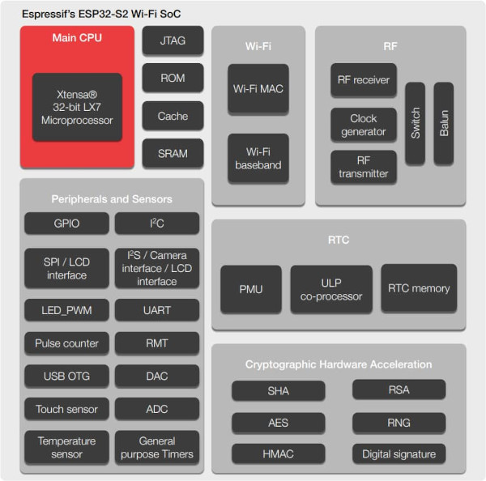
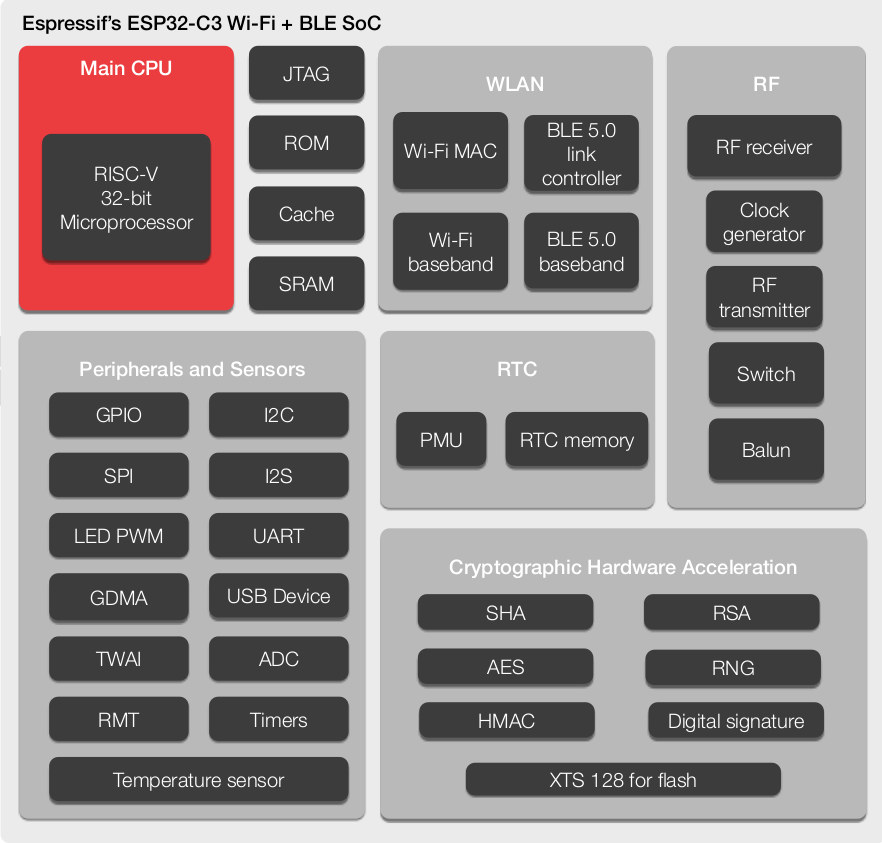
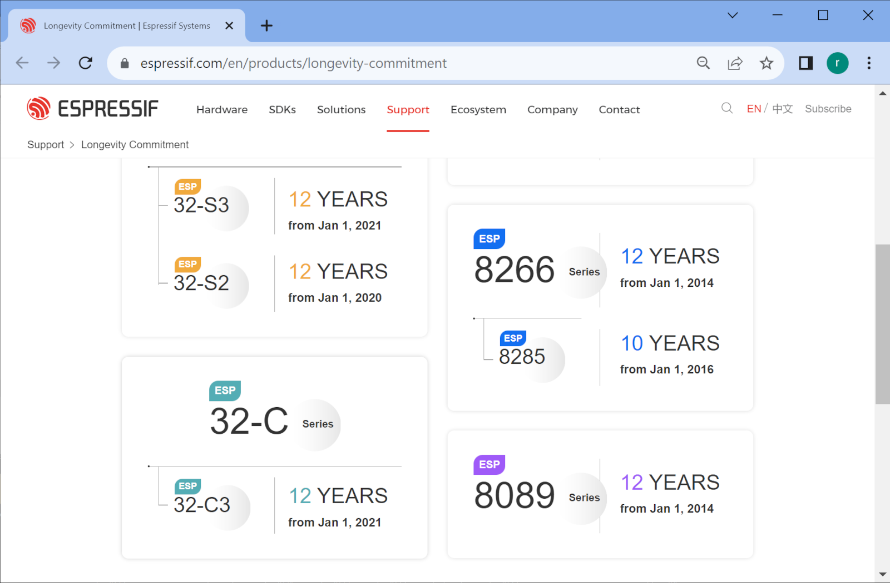
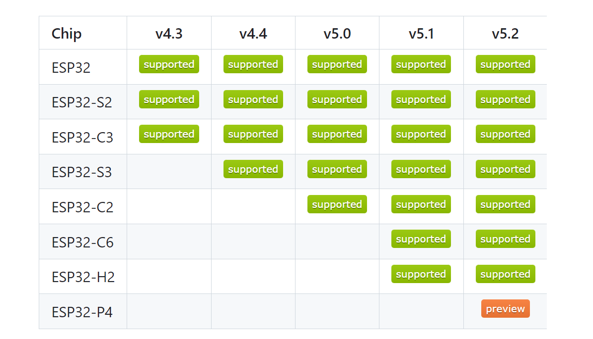

ESP32 SoCs#
▷ แนะนำชิป ESP32#
บริษัท Espressif Systems Co.Ltd. ที่ตั้งอยู่ในเมืองเซี่ยงไฮ้ ประเทศจีน (Shanghai / China) ได้พัฒนาชิป SoC (System-on-Chip) ออกมาหลายตระกูล และได้รับความนิยมอย่างมากในปัจจุบัน บริษัทได้เปิดตัวชิป ESP32 (32-bit dual-core, Xtensa LX6, 240MHz max., TSMC 40nm manufacturing process technology) ในวันที่ 6 ก.ย. 2559 (ค.ศ. 2016) และถือว่าเป็น 1st-gen Wi-Fi SoC (ถ้าไม่นับรวมชิป ESP8266 SoC ของบริษัทที่ได้ผลิตออกมาเป็นรุ่นแรก)
ชิปรุ่นนี้ มีจุดเด่นคือ มีราคาไม่แพง รองรับการใช้งาน BLE / Wi-Fi ภายในชิปมีวงจรหรือหน่วยประมวลผลที่ช่วยให้การคำนวณตามมาตรฐานสำหรับการสื่อสารข้อมูลที่มีปลอดภัย เช่น การเข้ารหัสข้อมูลด้วยวิธี AES การคำนวณค่าฟังก์ชันแฮชแบบ Secure Hash Algorithm (SHA) การเข้ารหัสลับด้วยกุญแจแบบไม่สมมาตร (Asymmetric / Public-Key Encryption) ตามวิธีของ RSA เป็นต้น ชิปนี้จึงเหมาะสำหรับการนำไปใช้งานด้าน IoT ดังนั้นจึงเป็นเหตุผลหนึ่งว่า ทำไมชิปหรือโมดูลนี้ได้รับความนิยมอย่างมาก
{kind=link}
รูป: ESP32 Block Diagram แสดงองค์ประกอบของวงจรภายในชิป (Source: Espressif)
ตัวอย่างชิป ESP32 SoC ของ Espressif (Datasheet) และมีตัวถังของไอซีเป็นแบบ QFN 5×5mm หรือ QFN 6×6mm
- ESP32-D0WD-V3 (dual-core, no embedded flash)
- ESP32-U4WDH (dual-core, with embedded 4MB SPI Flash @80MHz)
- ESP32-S0WD (single core, no embedded flash)
- ESP32-D0WD | ESP32-D0WDQ6 | ESP32-D0WDQ6-V3 — Not Recommended for New Designs (NRND)
ข้อสังเกตเกี่ยวกับชิป ESP32
- ESP32 ใช้ตัวประมวลผลภายในคือ Xtensa 32-bit LX6 (dual-core, symmetric) ทำงานตามรูปแบบของ RISC CPU achitecture (มีการทำคำสั่งโดยใช้ 7-stage RISC pipeline) มีการจัดการบัสและหน่วยความจำเป็นแบบ Harvard architecture แยกบัสข้อมูลและบัสสำหรับคำสั่งในการเข้าถึงหน่วยความจำ (Separate data and instruction buses)
- ESP32 มีหน่วยความจำภายใน ROM (448KB) ซึ่งภายในมีเฟิร์มแวร์สำหรับ Bootloader และ SRAM (520KB) ใช้ได้ทั้งเก็บข้อมูลและคำสั่ง (Data & Instructions)
- ผังหน่วยความจำ (Memory Map / Memory Address Space) ของ ESP32 จะถูกแบ่งออกเป็นส่วนต่าง ๆ เช่น
- ส่วนที่เข้าถึงหน่วยความจำภายในชิป (Internal Memory)
- ส่วนที่เข้าถึงหน่วยความจำภายนอกชิป (External Memory)
- ส่วนที่เข้าถึงรีจิสเตอร์ของวงจรภายในประเภทต่าง ๆ (Peripherals)
- หน่วยความจำ Internal ROM แบ่งออกเป็น 2 ส่วน ได้แก่ Internal ROM 0 (384KB) และ Internal ROM 1 (64KB)
- หน่วยความจำ Internal SRAM แบ่งออกเป็น 3 ส่วน ได้แก่ Internal SRAM 0 (192KB), Internal SRAM 1 (128KB) และ Internal SRAM 2 (200KB)
- หน่วยความจำภายนอกแบบ่งเป็น 2 ประเภท ได้แก่ SPI Flash (up to 16MB), SPI SRAM (up to 8MB)
- ESP32 จะต้องทำงานร่วมกับชิปหน่วยความจำภายนอกที่เรียกว่า SPI Flash (เช่น NOR Flash ของบริษัท Winbond หรือ Microchip ซึ่งรองรับโหมดการทำงาน Dual และ Quad SPI) และในบางกรณีจะพบว่า มีการใช้ชิปหน่วยความจำภายนอกที่เรียกว่า SPI SRAM หรือ Pseudo-Static RAM (PSRAM) เพื่อเพิ่มหน่วยจำความสำหรับ RAM
- การสื่อสารด้วยบัส SPI (Serial Peripheral Interface) โดยทั่วไปแล้ว ก็จะใช้ 4 ขา ได้แก่ SCK, MOSI, MISO, /CS) และความเร็วของ SCK สำหรับ ESP32 ได้สูงสุด 40MHz
- ความเร็วและจำนวนขาที่ใช้ในการสื่อสารสำหรับ SPI Flash ก็ขึ้นอยู่กับโหมดที่เลือกใช้งาน (SPI Flash Access Modes) เช่น Single (Standard) SPI, Dual SPI, Quad SPI เป็นต้น
- Dual SPI ใช้ 2 ขาสำหรับการส่งบิตของคำสั่ง แอดแดรส และข้อมูล -- ใช้ขา MOSI & MISO ของ SPI พร้อมกันในทิศทางเดียวกัน
(แต่เรียกชื่อว่า IO0 & IO1) ทำให้เขียนอ่านข้อมูลตามจังหวะของ SCK ได้ครั้งละ 2 บิต และมีการแบ่งเป็นโหมดย่อยได้แก่
dioและdoutซึ่งแตกต่างกันในรูปแบบการส่งบิตแอดเดรสและอ่านบิตข้อมูลจาก SPI Flash - Quad SPI ใช้ 4 ขาสำหรับสัญญาณข้อมูลและแอดเดรส และมีการแบ่งเป็นโหมดย่อยได้แก่
qioและqoutเหมือน Dual SPI แต่เพิ่มการใช้งานขา I/O มาเป็น 4 ขา แทนที่จะใช้แค่ 2 ขา
- Dual SPI ใช้ 2 ขาสำหรับการส่งบิตของคำสั่ง แอดแดรส และข้อมูล -- ใช้ขา MOSI & MISO ของ SPI พร้อมกันในทิศทางเดียวกัน
(แต่เรียกชื่อว่า IO0 & IO1) ทำให้เขียนอ่านข้อมูลตามจังหวะของ SCK ได้ครั้งละ 2 บิต และมีการแบ่งเป็นโหมดย่อยได้แก่
- การปรับเลือกความถี่สำหรับการทำงานของซีพียูทั้งสองแกน: โดยทั่วไป ก็จะใช้ความถี่สูงสุดอยู่ที่ระดับ 240MHz แต่ในการเขียนโปรแกรม ก็มีฟังก์ชันให้เลือกปรับความถี่ลดลงได้ในระดับอื่น เช่น 80MHz, 120MHz และ 160MHz (ชิปใช้วงจร Crystal Oscillator ความถี่ 40MHz จากภายนอก) เป็นต้น การลดความถี่ลงในบางช่วงเวลาขณะทำงาน จะทำให้ระบบใช้พลังงานน้อยลงได้
▷ ความหลากหลายของบอร์ด ESP32#
ตั้งแต่มีการเปิดตัวชิป ESP32 ครั้งแรก ก็มีบอร์ดไมโครคอนโทรลเลอร์ที่ใช้ชิปดังกล่าวออกมาสู่ตลาดหลายรูปแบบ ส่วนใหญ่ก็มีการผลิตและออกแบบมาจากประเทศจีนอาจมีรายละเอียดในเชิงฮาร์ดแวร์ที่แตกต่างกันไป เช่น การเลือกใช้ ESP32 Module ตำแหน่งการวางขาของบอร์ด รูปแบบของสายอากาศที่ใช้หรือมีอยู่ (onboard PCB antenna vs. external IPEX antena + U.FL connector) ดังนั้นผู้ใช้ควรศึกษารายละเอียดจากแหล่งข้อมูลของผู้ผลิต ไฟล์เอกสารอย่างเช่น ผังวงจรของบอร์ด (Board Schematic) รูปภาพแสดงตำแหน่งขาต่าง ๆ ของบอร์ด (Board Pinout Diagram) เป็นต้น
โดยส่วนใหญ่แล้ว นักออกแบบบอร์ดหรือ PCB จะไม่เลือกใช้ชิป ESP32 SoC โดยตรง แต่จะเลือกใช้โมดูล ESP32 ของบริษัท Espressif เพื่อความสะดวก ซึ่งมีหลายแบบและหลายขนาด โมดูล ESP32 ได้มีการรวมชิป ESP32 SoC ชิปหน่วยความจำ SPI Flash และ Crystal Oscillator (40MHz) ไว้ด้วยกันบนแผ่น PCB และมีเคสที่เป็นโลหะปิดครอบไว้ ยกเว้นส่วนที่เป็นสายอากาศหรือมีคอนเนกเตอร์สำหรับต่อสายอากาศภายนอก
ตัวอย่าง ESP32 SMD Modules ของ Espressif
- ESP32-WROOM-32 | ESP32-WROOM-32D & ESP32-WROOM-32U | ESP32-WROOM-32E & ESP32-WROOM-32UE — ESP32 Chip, 4MB SPI Flash, 40 MHz crystal oscillator
- ESP32-WROVER — เพิ่มไอซีหน่วยความจำ 8MB SPI PSRAM นอกเหนือจาก 4MB SPI Flash
- ESP32-MINI-1 & ESP32-MINI-1U
- ESP32-PICO-D4 — ESP32-D0WDQ6 Chip, 4MB SPI Flash, 40 MHz crystal oscillator แต่มีลักษณะเป็น System-in-Package (SiP) ขนาด 7×7mm
- ESP32-PICO-V3 | ESP32-PICO-V3-02
โมดูล ESP32-WROOM-32 และ ESP32-WROVER ได้รวมชิป ESP32 (เช่น ESP32 D0WDQ6 หรือ ESP32-D0WD-V3) และชิปหน่วยความจำไว้บนแผ่น PCB เดียวกัน และมีฝาโลหะปิดครอบไว้ แต่ ESP32-PICO-D4 หรือ ESP32-PICO-V3 เป็นวงจรรวมประเภทที่เรียกว่า System-in-Package (SiP) จึงมีลักษณะเหมือนไอซีหรือชิป ไม่ใช่ลักษณะที่เป็นโมดูลหรือแผ่น PCB แบบ SMD
รูป: ESP32-WROOM-32D Module (Source: Espressif)
รูป: ESP32-WROVER Module (Source: Espressif)
รูป: ผังวงจรของโมดูล ESP32-WROVER แสดงให้เห็นไอซีที่เป็นองค์ประกอบหลักของโมดูล (Source: Espressif)
▷ แผนผังขาของบอร์ด ESP32#
ตามที่ได้กล่าวไป เนื่องจากมีบอร์ด ESP32 อยู๋หลายแบบให้เลือกใช้งาน ดังนั้นจึงแนะนำว่า ควรจะมีไฟล์หรือรูปแสดงตำแหน่งขา (PinMap) ของบอร์ดที่จะใช้งาน และหาดูหรือดาวน์โหลดได้จากอินเทอร์เน็ต (ดูรูปสำหรับบอร์ดตัวอย่าง) จะช่วยให้การต่อวงจรทำได้สะดวกและลดความผิดพลาด

รูป: แสดงตำแหน่งขาของบอร์ด Espressif ESP32 DevKitC V4 (Schematic)
รูป: แสดงตำแหน่งขาของบอร์ด WeMos LOLIN32 Lite
รูป: แสดงตำแหน่งขาของบอร์ด NodeMCU ESP32S
▷ ESP32 Series#
ถัดจาก ESP32 แล้วก็มีรุ่นอื่นตามมาดังนี้ ก็เพื่อตอบโจทย์ความต้องการในตลาดของผู้ใช้ให้กว้างขึ้นและแตกต่างกัน
- ESP32-S2
- เปิดตัววันที่ 3 ก.ย. 2562 และเริ่มจำหน่ายในเดือน ก.พ. 2563 (announced)
- ใช้ตัวประมวลผล Tensilica LX7 (32-bit single-core, 240MHz, 320KB SRAM) — ถือว่ามีสเปคของตัวประมวลผลต่ำกว่าของ ESP32
- เพิ่ม USB OTG support
- ไม่รองรับการใช้งาน BLE มีแต่ Wi-Fi (2.4GHz)
- ไฟล์เอกสาร: ESP32-S2 Technical Reference Manual
- ESP32-S3
- เปิดตัววันที่ 31 ธ.ค. 2563 (announced)
- ใช้ตัวประมวลผล Tensilica LX7 (32-bit dual-core, 240MHz, 512KB SRAM)
- เพิ่ม USB-OTG support
- เพิ่มชุดคำสั่ง Vector instructions / AI Acceleration Support เพื่อช่วยเพิ่มความสามารถในการประมวลผลทางด้าน Edge AI / TinyML
- ไฟล์เอกสาร: ESP32-S3 Technical Reference Manual
- ESP32-C3
- เปิดตัววันที่ 27 พ.ย. 2563 (announced)
- เปลี่ยนมาใช้ซีพียูตามสถาปัตยกรรม RISC-V (32-bit single-core, 120MHz, 400KB SRAM)
- เน้นประหยัดพลังงานมากกว่า ESP32-S2
- มี BLE 5.0 และ Wi-Fi 2.4GHz (IEEE 802.11b/g/n)
- ไม่มี ULP (Ultra-Lowpower Coprocessor)
- ไม่มี DAC (Digital-to-Analog Converter)
- ไม่มี USB-OTG support
- เน้นราคาถูก คาดว่าจะมาแทนที่ ESP8266 เพื่อใช้งานในลักษณะ WiFi-to-Serial
- ไฟล์เอกสาร: ESP32-C3 Technical Reference Manual
- ESP32-C6
- เปิดตัววันที่ 9 เม.ย. พ.ศ. 2564 (announced)
- ใช้ตัวประมวลผลเหมือน ESP32-C3 แต่รองรับมาตรฐาน Wi-Fi 6 (IEEE 802.11ax)
- ESP32-H2
- เปิดตัววันที่ 2 สิงหาคม พ.ศ. 2564 (announced)
- ใช้ตัวประมวลผล RISC-V (32-bit single-core, 96MHz, 256KB SRAM) เน้นการทำงานแบบประหยัดพลังงาน (Low-Power) เหมาะสำหรับงานด้าน Smart Home
- ไม่มี Wi-Fi แต่รองรับ BLE 5.0
- รองรับการใช้งานตามมาตรฐาน IEEE 802.15.4 (ZigBee 3.0 / OpenThread 1.x)
- ไฟล์เอกสาร: ESP32-H2 Technical Reference Manual
- ESP32-C2
- ใช้ตัวประมวลผล RISC-V (32-bit single-core, 120 MHz, 272KB SRAM)
- รองรับการสื่อสารด้วย 2.4 GHz Wi-Fi และ Bluetooth 5 (LE)
- โดยรวมจะคล้ายกับ ESP-C3 แต่ลดสเปคลงมา แต่มีเวอร์ชันที่รวม Embedded Flash (SiP) ด้วย

รูป: ESP32-S2 Block Diagram (Source: Espressif)

รูป: ESP32-C3 Block Diagram (Source: Espressif)
รูป: ESP32-C3 Block Diagram (Source: Espressif)
รูป: ESP32-C2 Block Diagram (Source: Espressif)
ในปีค.ศ. 2022 บริษัท Espressif Systems ได้เปิดเผยบนหน้าเว็บไซต์ แผนการผลิตและจำหน่ายชิป ESP32 เพื่อป้อนให้ตลาดอย่างต่อเนื่องในอนาคต ดังนี้

รูป: ESP32 Longevity Commitment
▷ การเขียนโปรแกรมสำหรับ ESP32#
บอร์ดไมโครคอนโทรลเลอร์ ESP32 มีราคาถูกและให้เลือกใช้งานได้หลายแบบจากหลายผู้ผลิต ดังนั้นผู้ใช้งานจึงเข้าถึงฮาร์ดแวร์ได้ง่ายกว่าบอร์ดที่มีราคาแพง เหมาะสำหรับผู้เริ่มต้น หรือการเรียนการสอนที่มีงบประมาณจำกัด หรือลงทุนศึกษาด้วยตัวเอง
สำหรับการเขียนโปรแกรมเพื่อใช้งานกับ ESP32 ก็มีตัวเลือกซอฟต์แวร์ของบริษัท Espressif ดังนี้
- ในช่วงแรก บริษัท Espressif ได้เผยแพร่ ESP32 RTOS SDK ให้เป็นโอเพนซอร์ส เพื่อการพัฒนาซอฟต์แวร์ต่าง ๆ สำหรับ ESP32
- ต่อมาได้เปลี่ยนมาพัฒนา SDK ตัวใหม่ที่เรียกว่า ESP-IDF (Espressif IoT Development Framework)
- เวอร์ชันในปัจจุบันของ ESP-IDF คือ v4.4 (ปลายปีค.ศ. 2021) และคาดว่าจะมีเวอร์ชัน v5.0 ออกมาในลำดับถัดไป
- คู่มือการใช้งานออนไลน์สำหรับ ESP-IDF:
รูป: ตัวอย่างองค์ประกอบของซอฟต์แวร์ ESP-IDF SDK (Source: Espressif)

รูป: ESP-IDF Versions vs. ESP Series Support (Source: Espressif)
รูป: **ESP-IDF Versions and Support (Source: Espressif)
▷ ตัวเลือกและภาษาคอมพิวเตอร์อื่นสำหรับ ESP32#
- ผู้ใช้สามารถเลือก Arduino IDE ซึ่งเหมาะสำหรับผู้เริ่มต้นที่ต้องการเรียนรู้การเขียนโค้ด Arduino Sketches สำหรับ ESP32 / ESP32-S2 / ESP-C3 โดยจะต้องติดตั้ง Arduino-ESP32 Core ผ่านทาง Arduino Boards Manager ของ Arduino IDE
- VS Code ซึ่งเป็น Open Source IDE ของ Microsoft
และให้ติดตั้ง Extensions ผ่านทาง VSCode Extension Manager ดังนี้
- PlatformIO Extension รองรับการใช้งาน Arduino-ESP32 เช่นกัน นักพัฒนาจำนวนไม่น้อย ก็เลือกใช้ซอฟต์แวร์นี้แทน Arduino IDE
- ESP-IDF Extension:
esp32devก็เหมาะสำหรับผู้ที่สนใจจะเขียนโค้ด C/C++ สำหรับ ESP32 โดยใช้ ESP-IDF (Espressif IoT Development Framework) และไม่ใช้รูปแบบการเขียนโปรแกรมแบบ Arduino Sketch
- Eclipse IDE for C/C++ Developers + ESP-IDF Plugin
- Github repo": https://github.com/espressif/idf-eclipse-plugin
รูป: ESP-IDF + Espressif IDE Installer for Windows (Update: 2022-02-23)
 รูป: ตัวอย่างการใช้งาน VS Code IDE สำหรับ Windows และใช้งานร่วมกับ WSL-Ubuntu และ
ESP-IDF
รูป: ตัวอย่างการใช้งาน VS Code IDE สำหรับ Windows และใช้งานร่วมกับ WSL-Ubuntu และ
ESP-IDF
นอกจากภาษา C/C++ ก็ยังมีภาษาคอมพิวเตอร์อื่นอีกที่นำมาใช้เขียนโปรแกรมได้สำหรับ ESP32 เช่น
- MicroPython for ESP32
- CircuitPython (6.x or higher) for ESP32-S2
- Espurino / JavaScript for ESP32
- Rust for ESP32
- Lua RTOS for ESP32 by Whitecat
- TinyGo for ESP32
การใช้งาน RTOS อย่างเช่น
This work is licensed under a Creative Commons Attribution-ShareAlike 4.0 International License.
Created: 2022-02-15 | Last Updated: 2022-04-30